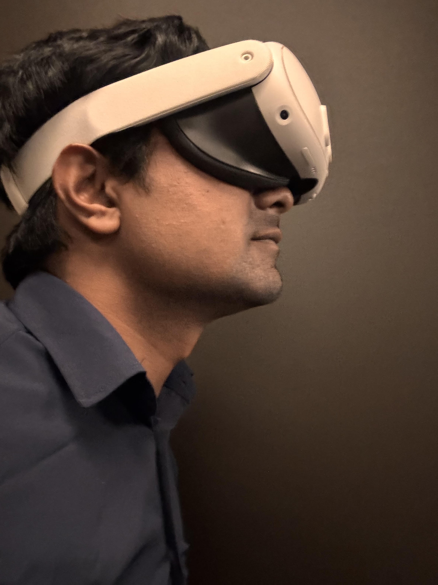

Focus: Communication and Signal Processing
Relevant Courses: Natural Language Processing, Principles of Human-Computer Interaction, Fault-Tolerant Computing, Human Factors in Software Engineering
I am a Computer Science graduate researcher at Colorado State University (CSU), where I work in the Arefin Lab under Dr. Mohammed Safayet Arefin. My research focuses on Human-Computer Interaction (HCI), Extended Reality (XR), and spatial perception. I am driven by the goal of making immersive computing more intuitive, comfortable, and accessible to everyone by eliminating perceptual and physical hardware barriers.
Prior to CSU, I completed my B.S. in Electrical and Electronic Engineering at Bangladesh University of Engineering and Technology (BUET). There, I worked alongside Dr. S. M. Mahbubur Rahman on deep learning-based color harmonization for augmented reality—a project aimed at dynamically adapting virtual content to real-world environments.
Currently, my research spans three key areas in spatial computing:
- Near-Field AR Depth Perception: I co-authored research accepted to IEEE ISMAR 2026 investigating how vergence–accommodation conflict (VAC) magnitude and direction alter depth perception and visual comfort, utilizing a custom-built optical see-through haploscope.
- Native Software-Level Vision Correction: In collaboration with Dr. Carlos Montalto, I am developing software solutions using the SharpView algorithm to correct refractive vision errors directly on-display. Our objective is to make AR/VR headsets sharp and comfortable for individuals with vision impairments without relying on heavy, expensive prescription lens hardware.
- Intelligent Spatial Guidance: Working with Dr. Francisco Ortega, I develop eye-tracking pipelines and intelligent magnification systems designed to resolve peripheral field-of-view disorientation during complex 3D navigation.
Beyond my research, I serve as a Graduate Teaching Assistant in CSU's Department of Computer Science. As I look forward to starting my Ph.D., I am eager to continue advancing the frontiers of perception, secure and agentic AI, and accessible XR technologies.